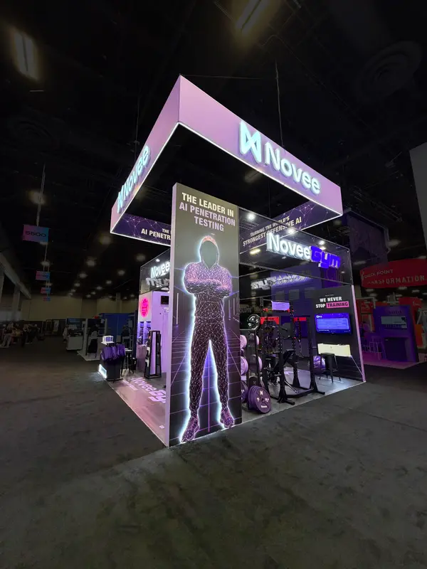
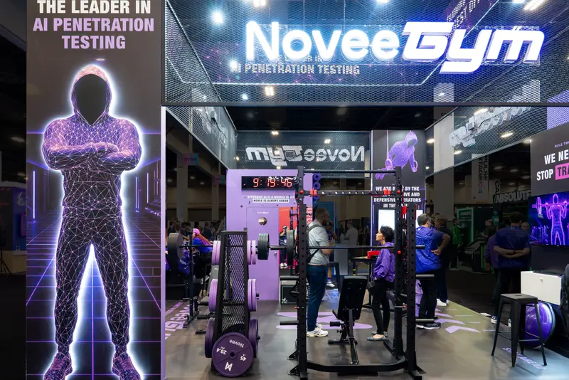
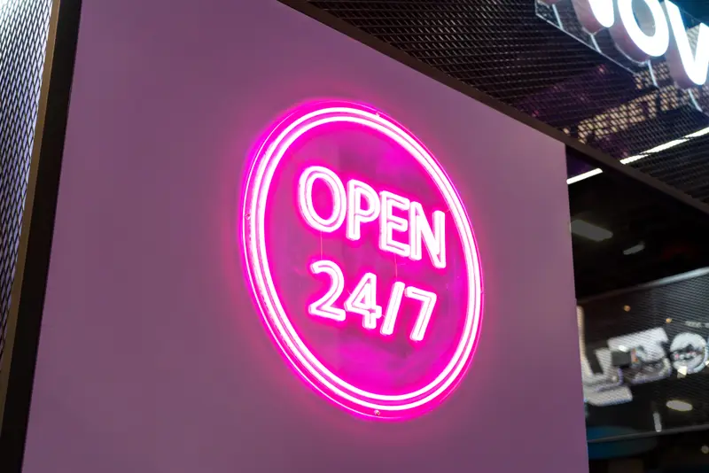
Zero NetworksBlack Hat USA 2025
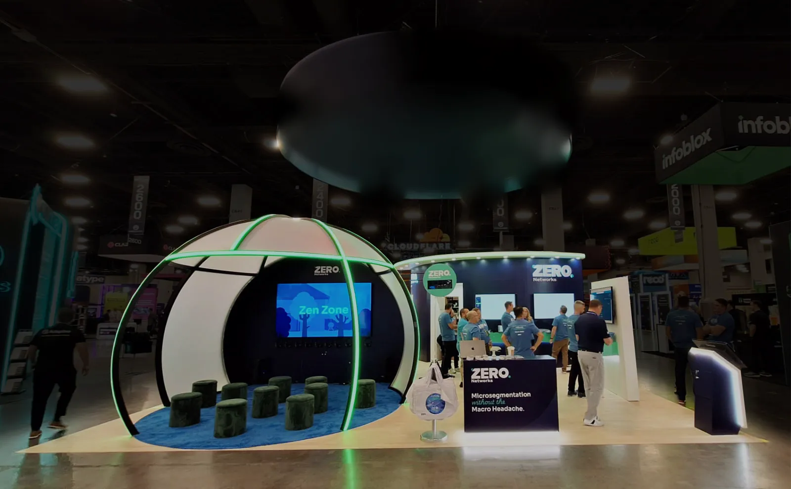
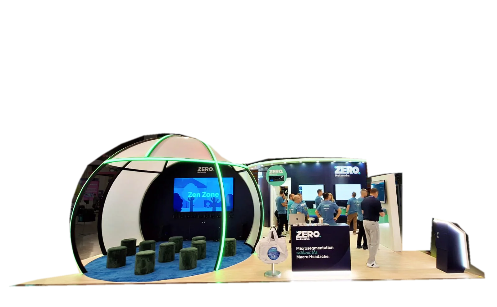
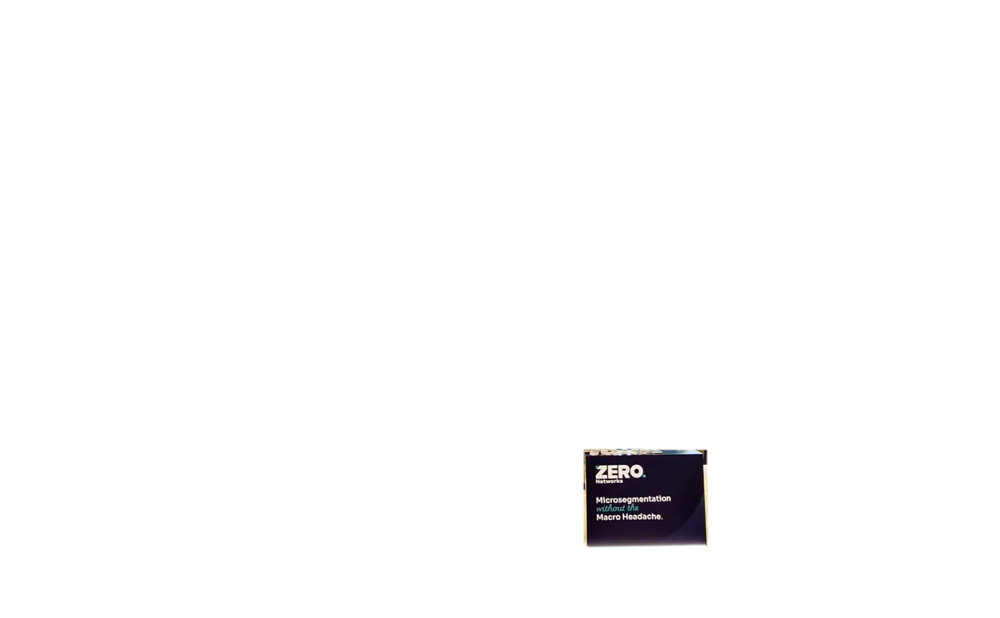
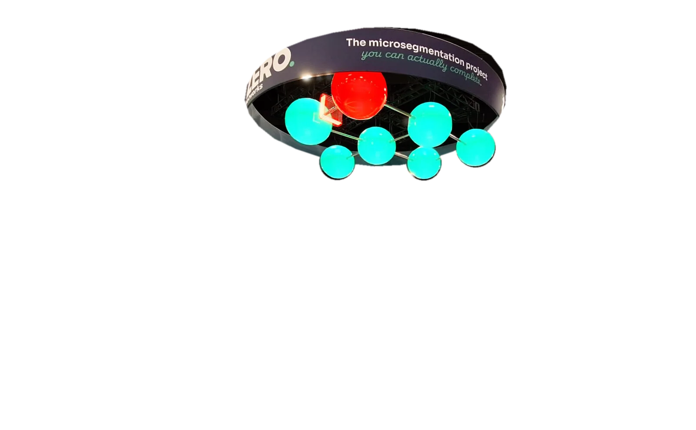
Beiman Cohen Biran מתכננים ובונים ביתנים לתערוכות בחו״ל, מהקונספט ועד ההקמה באולם. אלה ביתנים שבנינו לחברות סייבר. Beiman Cohen Biran design and build exhibition booths abroad, from concept to the build on the show floor. These are booths we built for cyber companies.
לדבר עם מתן על הביתןTalk to Matan about your boothבערב שלפני הפתיחה האולם כבה, ונשארים רק הביתנים. כל ביתן במסדרון הזה נבנה על ידינו, והאור על המסך הוא האור שלו, נמדד מהתמונה. The night before opening, the hall goes dark and only the booths stay lit. We built every booth in this aisle, and the light on your screen is its light, measured from the photo.



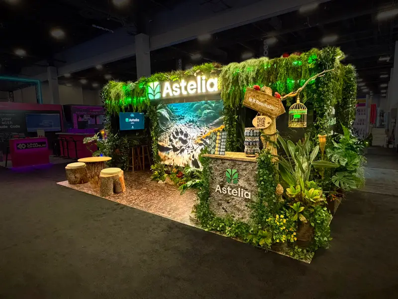
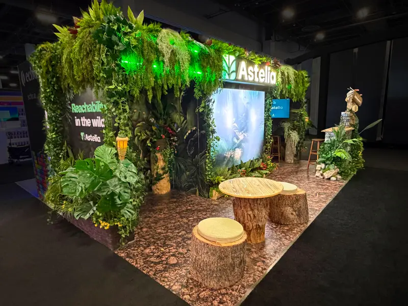
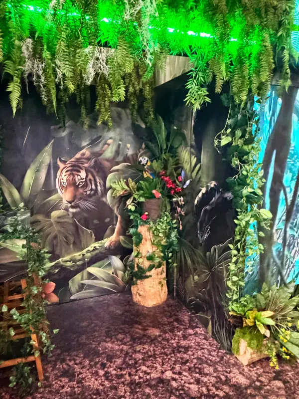
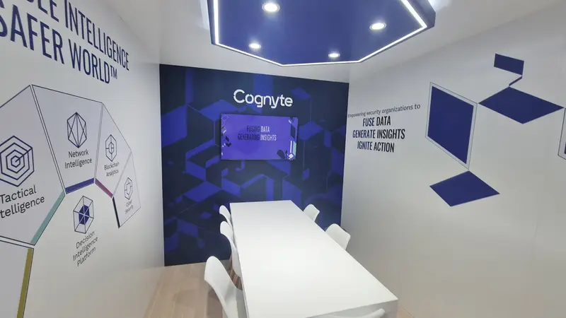

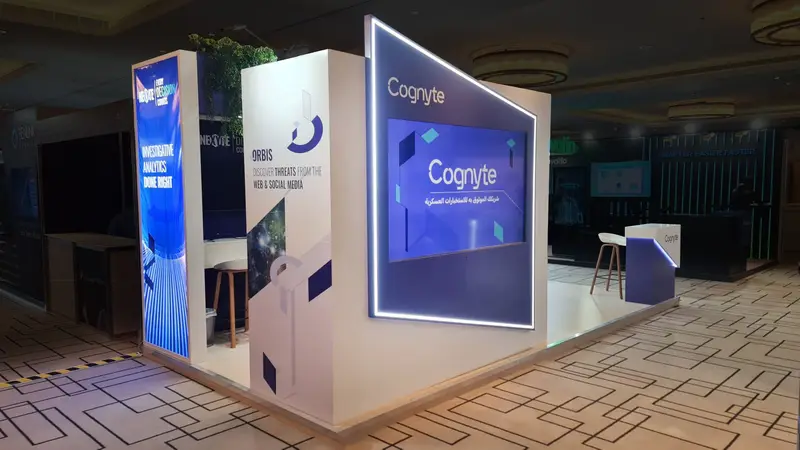
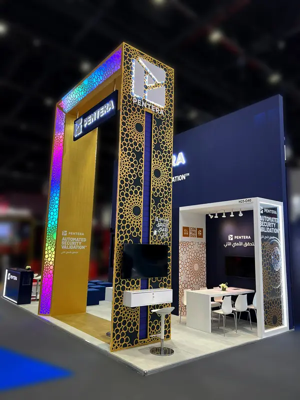

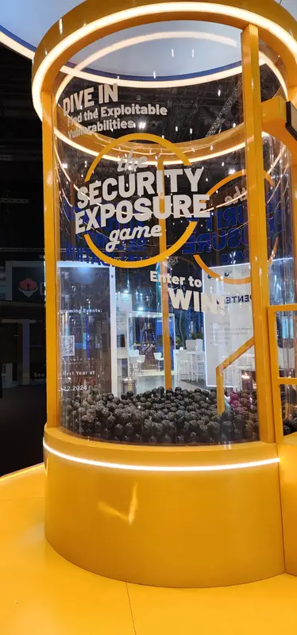
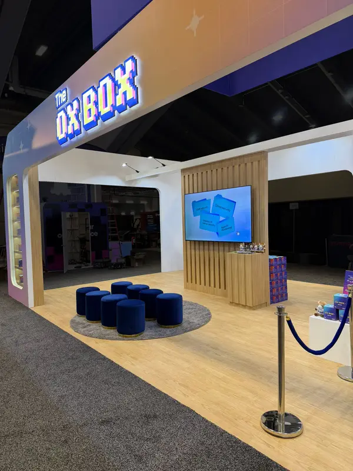
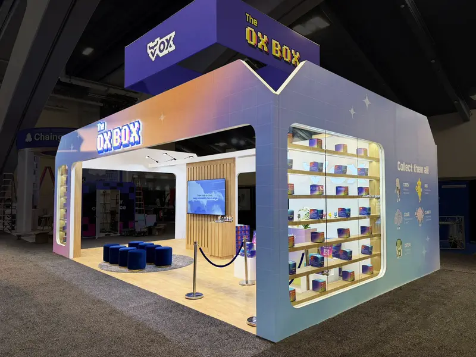
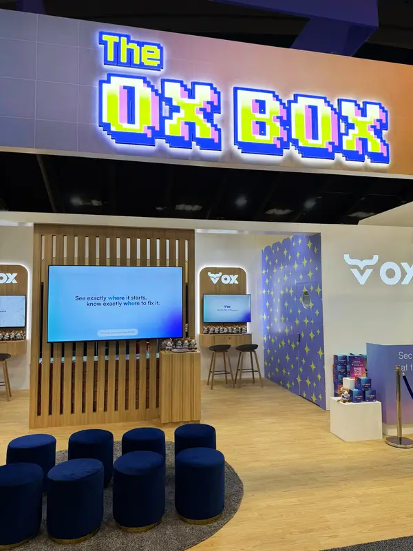
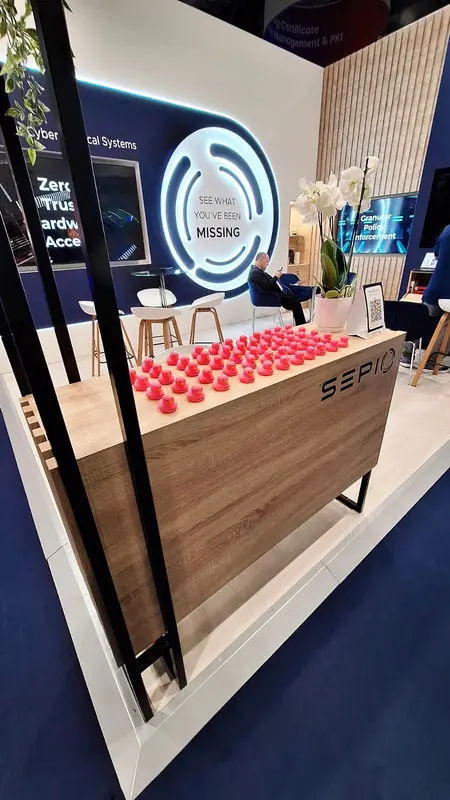
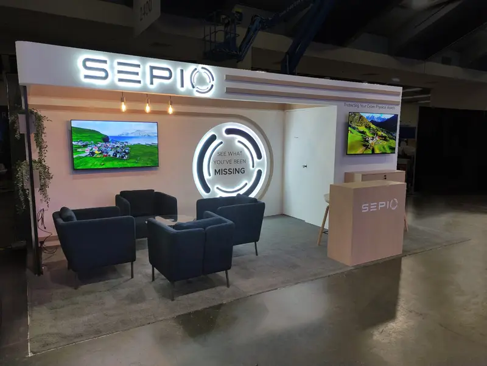

בסוף המסדרון
יש עוד מקום אחד.At the end of the aisle
there is one more space.
מציגים ב-2027? ספרו למתן באיזו תערוכה, ונקבע שיחה על הביתן: מה אתם רוצים שיקרה בו, איך הוא ייראה, ואיך הוא עולה באולם. Exhibiting in 2027? Tell Matan which show, and we will set a call about the booth: what you want to happen in it, how it will look, and how it goes up on the floor.